65 tons · Inner Sphere · 8 variants · 3048 to 3148

Team Banzai built the Axman as the big brother to the Hatchetman, and the brief was blunt: a machine for killing other machines. Defiance and Johnston picked it up, and full production started in 3048.
It was also meant to mean something. The Axman was built as a symbol of Federated Commonwealth unity, deliberately assembled from components made in the Federated Suns, in the Lyran Commonwealth, and in what had been Capellan space. A machine you could point at and say, look, this is what the two of us can build together.
You can probably see where this is going.
What you have got. Sixty-five tons, walk four, and four jump jets, which on a heavy is the whole point. A Luxor Devastator-20 autocannon that takes a ton of plate off whatever it hits. A Sutel large pulse laser and three Intek mediums. And a hatchet, five tonnes of it, held in the right hand.
About the axe. It is not really the weapon. It is the reason people move. A MechWarrior who knows an Axman can jump to them and swing will not stand where an Axman can jump to them, and that is worth more over a game than the damage it does when it lands. Play it as a threat that shapes the board, not as a thing you are trying to connect with.
If you are choosing one: the AXM-3S and AXM-3Sr are the best built, because somebody finally fitted a light engine instead of the XL. The AXM-1N is the real thing. The AXM-2N is a good machine that is not really an Axman.
Sixty-five tons with four jump jets is the design, and everything else is arranged around it. Most heavies that close on you have to walk, which gives you time to arrange your line. An Axman can be ninety metres to your flank on the turn it decides to be, and that changes what the autocannon and the hatchet are worth.
The Devastator-20 is the honest damage. A ton of armour off a target in one hit, at short range, from something that just jumped into your rear arc. The Sutel large pulse and the three Inteks fill in around it.
Then the hatchet, and I have sharpened a few. Five tonnes of hardened head on a shaft, held rather than fixed, and it works exactly as crudely as it sounds. What it is genuinely good for is not the swing. It is that the other pilot has to keep thinking about the swing.
The thing to know before you sign one out is what is underneath. Most Axmen run an XL engine, and on 3 structure that means a side torso takes the machine with it. The Lyran 3S and 3Sr fixed that with a light engine and it is the single biggest improvement anyone made to the design.
This is the only chassis on the site where the model numbers tell you what was happening to a nation.
| Year | Variant | What it says |
|---|---|---|
| 3048 | AXM-1N | Built from Federated Suns, Lyran and ex-Capellan components. A symbol of unity. |
| 3060 | AXM-3S | After Katrina split the realm, the Lyran Alliance commissions its own, made exclusively by Defiance. |
| 3071 | AXM-4D | The Federated Suns builds a version specifically to reduce reliance on foreign equipment. |
Twenty-three years from a machine built to prove two realms could work together, to two realms each building their own so they would not have to. Nobody wrote that as a story. It is just what the production records say.
The prototype was the -1X, and its job was to convince the AFFC to release the funding and the recovered technology the real thing needed. Without an advanced engine it had to make do: the autocannon came down to a ten, the large pulse became a standard laser, and it lost a medium. Closer to a scaled-up Hatchetman than the machine that followed. It worked as a pitch, which was all it had to do.
What came out of that was the 1N, and it arrived at exactly the wrong moment to be a symbol of anything. Full production began in 3048. The Clans arrived the following year.
Then Katrina Steiner-Davion created the Lyran Alliance in 3057 and the Federated Commonwealth started coming apart. By 3060 the Alliance had its own Axman, built for it alone by Defiance Industries. By 3071 the Federated Suns had replaced the 1N line on New Syrtis with a version designed explicitly to reduce its dependence on equipment made somewhere else.
And then the last one, which I find oddly hopeful. The 3148 AXM-5N was rushed into production for a desperate AFFS after the Davions took New Syrtis back from the Capellans. It carries a hyper-assault Gauss rifle supplied by the Tiburon Khanate and a Clan Sea Fox ER PPC. A machine built from whatever three unrelated suppliers could provide, in a hurry, because it was needed. Which is closer to how the original actually got made than any of the politics in between.
Every verdict below is against other Axmen available in the same era. This is a short list by the standards of this site, which makes the era filtering less important and the engine choice more so.
Nothing in its era does the chassis's job better for the money.
Does the job competently. Another variant does it better or cheaper, but there is no reason to avoid this one.
Only earns its Battle Value if you specifically need what it carries. C3, stealth, a command console, flak, jump jets.
Another variant in the same era, at no more than 3 percent above its Battle Value, matches or beats it on every Alpha Strike damage band, on armour, on structure, and carries every special ability it has. Nothing gained, something lost, no dearer.
Only the Trap tier is calculated. It is worked out from the variant data rather than decided by me, which means it is falsifiable: to argue with it you only have to name something the cheaper machine gives up. The other three are my opinion and you should treat them that way. 0 of the 8 Axman variants fail the Trap test. The full rating scale is here, including what it deliberately does not measure.
65 tons · BV 1374 · PV 33 · Skirmisher · 3048
Walk 4 / Run 6 / Jump 4 · 10 IS Double · 260 XL Engine
1x Large Pulse Laser, 3x Medium Laser, 1x AC/20
The original, 3048. A Luxor Devastator-20 autocannon, a Sutel large pulse laser, three Intek mediums, four jump jets, and a five-tonne hatchet in the right hand. Everything about it says get close, and the jump jets mean it can. The XL engine is the bill.
65 tons · BV 1458 · PV 33 · Skirmisher · 3049
Walk 4 / Run 6 / Jump 4 · 10 IS Double · 260 XL Engine
1x Large Pulse Laser, 3x Medium Laser, 2x LRM 15
Called a mistake by some and a stroke of genius by others, which is fair. The autocannon comes off and two LRM 15s go on, so the machine that was built to close now shoots from range and carries an axe it will rarely swing. It is a good missile platform. It is barely an Axman.
65 tons · BV 1649 · PV 32 · Skirmisher · 3060
Walk 4 / Run 6 / Jump 4 · 10 IS Double · 260 Light Engine
3x ER Medium Laser, 1x LB 20-X AC
Lyran Alliance, 3060, built exclusively for them by Defiance. An LB 20-X where the autocannon was, ER mediums, and crucially a light engine instead of the XL, so losing a side torso no longer ends the fight. The best-built Axman there is.
65 tons · BV 1222 · PV 32 · Brawler · 3071
Walk 4 / Run 6 / Jump 0 · 10 Single · 260 XL Engine
2x Medium Laser, 4x Light AC/5
Davion, 3071, and the point of it is political. Four light autocannons, two mediums, a targeting computer, and it drops the jump jets, the lasers and the big gun to get there. It is on single heat sinks. This is the Axman built to stop needing Lyran parts.
65 tons · BV 2132 · PV 41 · Missile Boat · 3074
Walk 5 / Run 8 / Jump 0 · 10 IS Double · 325 XL (Clan) Engine
4x ER Medium Laser, 2x Thunderbolt 15
Twin Thunderbolt 15 launchers and four ER mediums on a Clan-grade XL, walking five. Enormous long-range damage for sixty-five tons, no jump jets, and an axe it is not going to use.
65 tons · BV 2575 · PV 39 · Skirmisher · 3148
Walk 4 / Run 6 / Jump 4 · 10 IS Double · 260 XL Engine(IS)
1x ER PPC, 3x ER Medium Laser, 1x HAG/20
3148, thrown together for a desperate AFFS after the recapture of New Syrtis. A hyper-assault Gauss 20 from the Tiburon Khanate, a Sea Fox ER PPC, three ER mediums, and the jump jets are back. Parts from three different suppliers and it works.
Piloting one. Jump first, shoot second. The four jets are the reason the machine is worth its Battle Value and sitting still wastes them. Get into a flank or a rear arc, put the Devastator-20 into something, and let the axe do its work by existing. Watch the side torsos on any of the XL fits, because that is how these die.
Fighting one. Keep it at range and keep moving. Most fits have nothing worth speaking of past medium range. Four of the 8 do reach further, and two of those, the Thunderbolt-armed missile variants, gave up the jump jets to manage it. If it does land next to you, the autocannon is the problem, not the hatchet. Against an XL fit, concentrate on a side torso.
What I see go wrong. People chase the axe. They spend turns manoeuvring for a physical attack that misses, while the autocannon that would have done the job sits unfired. The hatchet is a deterrent. Treat it as one and the machine is good.
If you run solo games with our AI opponent, the Axman splits in a way that matters more than usual, because the two groups do not play alike at all.
Damage figures are the Alpha Strike short, medium and long values. The hatchet is a physical weapon and does not appear in the loadout.
| Variant | Intro | BV | PV | Role | Weapons | S/M/L | Verdict |
|---|---|---|---|---|---|---|---|
| Late Succession War - Renaissance | |||||||
| AXM-1N | 3048 | 1374 | 33 | Skirmisher | 1x Large Pulse Laser, 3x Medium Laser, 1x AC/20 | 4/4/0 | Worth it |
| Clan Invasion | |||||||
| AXM-2N | 3049 | 1458 | 33 | Skirmisher | 1x Large Pulse Laser, 3x Medium Laser, 2x LRM 15 | 3/3/2 | Solid |
| AXM-3S | 3060 | 1649 | 32 | Skirmisher | 3x ER Medium Laser, 1x LB 20-X AC | 3/3/0 | Worth it |
| Jihad | |||||||
| AXM-3Sr | 3069 | 1734 | 39 | Skirmisher | 3x ER Medium Laser, 1x Rotary AC/5, 1x Medium Pulse Laser | 4/4/0 | Worth it |
| AXM-4D | 3071 | 1222 | 32 | Brawler | 2x Medium Laser, 4x Light AC/5 | 4/4/0 | Situational |
| AXM-6X | 3074 | 2132 | 41 | Missile Boat | 4x ER Medium Laser, 2x Thunderbolt 15 | 3/3/3 | Solid |
| Early Republic | |||||||
| AXM-6T | 3083 | 1830 | 43 | Missile Boat | 4x ER Medium Laser, 2x Thunderbolt 15 | 3/3/3 | Solid |
| Dark Age | |||||||
| AXM-5N | 3148 | 2575 | 39 | Skirmisher | 1x ER PPC, 3x ER Medium Laser, 1x HAG/20 | 3/3/3 | Worth it |
Availability for the AXM-1N by era, straight off the Master Unit List.
| Era | Available to |
|---|---|
| Late Succession War - Renaissance (3020 - 3049) | Federated Suns, Lyran Commonwealth |
| Clan Invasion (3050 - 3061) | Federated Commonwealth, Federated Suns, Free Rasalhague Republic, Kell Hounds, Lyran Alliance, Lyran Commonwealth, Mercenary, St. Ives Compact, Wolf's Dragoons |
| Civil War (3062 - 3067) | Federated Commonwealth, Federated Suns, Free Rasalhague Republic, Kell Hounds, Lyran Alliance, Mercenary, St. Ives Compact, Wolf's Dragoons |
| Jihad (3068 - 3080) | Federated Suns, Filtvelt Coalition, Free Rasalhague Republic, Kell Hounds, Lyran Alliance, Mercenary, Wolf's Dragoons |
| Early Republic (3081 - 3100) | Federated Suns, Filtvelt Coalition, Lyran Commonwealth, Mercenary |
| Late Republic (3101 - 3130) | Filtvelt Coalition, Lyran Commonwealth, Mercenary |
| Dark Age (3131 - 3150) | Lyran Commonwealth |
45 tons · Inner Sphere · 15 variants · BV 854 to 1788
The 45 ton original that started it. The Axman is explicitly its big brother, and it is the reason anybody puts axes on BattleMechs at all.
55 tons · Inner Sphere · 6 variants · BV 1193 to 1751
The other design that came out of the same era and the same realm, and the other one that almost did not make it. Lighter, no jump jets, and a very different story.
65 tons · Inner Sphere · 19 variants · BV 1242 to 1880
What the AXM-2N is really competing with once you take the autocannon off, and the comparison is not flattering.
The AXM-3S and AXM-3Sr, because they are the only ones built on a light engine rather than an XL, which means losing a side torso does not end the fight. The AXM-1N at BV 1374 is the classic and still perfectly good.
As a weapon, situational. As a deterrent, excellent. It weighs five tonnes and it will take an arm or a head off something if it connects, but the value is that the other pilot has to keep respecting the possibility. The mistake is manoeuvring for the swing instead of using the autocannon.
The Hatchetman is 45 tons and came first; the Axman is 65 tons and was built by Team Banzai as its big brother, designed specifically as a mech killer. Same idea, considerably more machine behind it.
It is a late design. Full production only began in 3048, so it has had about a century rather than the five or six that the Star League era designs have had. 8 variants across 100 years is a normal rate, there has just been less time.
Most. 5 of the 8 carry four jets. The exceptions are the AXM-4D, which dropped them for autocannons, and the two Thunderbolt-armed missile variants, which gave them up for reach.
Stats on this page are generated directly from our variant database, which is reconciled against the Master Unit List for Battle Value, introduction dates and per-era faction availability. Alpha Strike damage values are the standard card figures. If you spot something wrong, tell me and I will fix it.